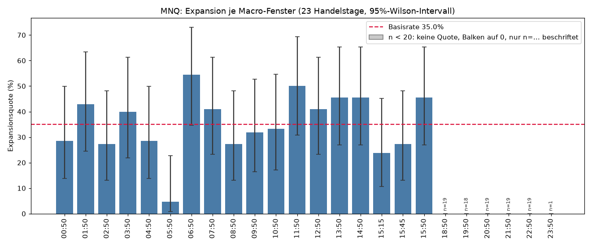
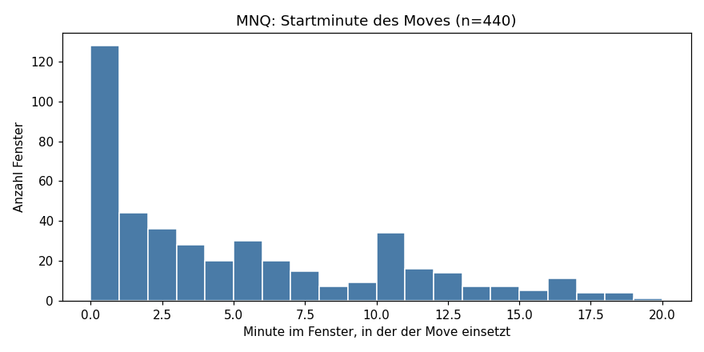
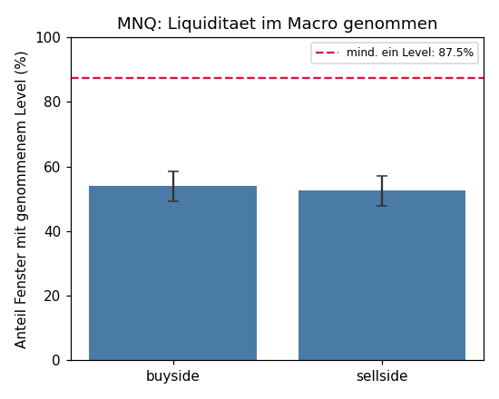

Macro-Datenbank (laufend)
Inhalt
Macro-Datenbank (laufend)
Erzeugt von algo/macro_db.py plot. Basis: MNQ, 440 vollständig
erfasste Macro-Fenster aus 23 Handelstagen (2026-07-08 … 2026-08-07).
Diese Seite wird bei jedem Lauf überschrieben — sie ist ein laufender Stand,
kein Schnappschuss.
Basisrate Expansion: 35.2% [30.9–39.8] (n=440, k=155)
Expansion je Fenster

Wann setzt der Move ein?

Liquidität im Fenster genommen

Vorbehalte
- Die Stichprobe ist klein: rund 20 Tage je Fenster. Aussagen auf Fenster-Ebene sind noch nicht belastbar, Aussagen auf Bedingungs-Ebene über alle Fenster hinweg früher.
- Fenster desselben Handelstags sind nicht unabhängig — p-Werte sind optimistisch.
- 6 Fenster liegen mit n < 20 unter der Mindeststichprobe aus
fmt_quote()/vergleich()und sind in Diagramm 1 ausgegraut/schraffiert mit n=…-Beschriftung statt vollem Prozentbalken markiert: 18:50, 19:50, 20:50, 21:50, 22:50, 23:50. Am deutlichsten 23:50 mit nur n=1 (Exportlücke 23:59–00:08) — der 100%-Wert dort ist ein Stichproben-Artefakt, keine belastbare Quote (Wilson-Intervall entsprechend breit: 20,7–100 %). 16:50 fehlt sogar ganz (ragt über den Sessionschluss 17:00 hinaus) und taucht im Diagramm nicht auf. Die Asia-Session ist damit systematisch knapper besetzt als der Rest, nicht nur ein Einzelfall. - NDOG/NWOG/ORG sind noch keine Level-Quelle (Kalendertag- statt Session-Logik,
siehe
algo/PLAN.md).